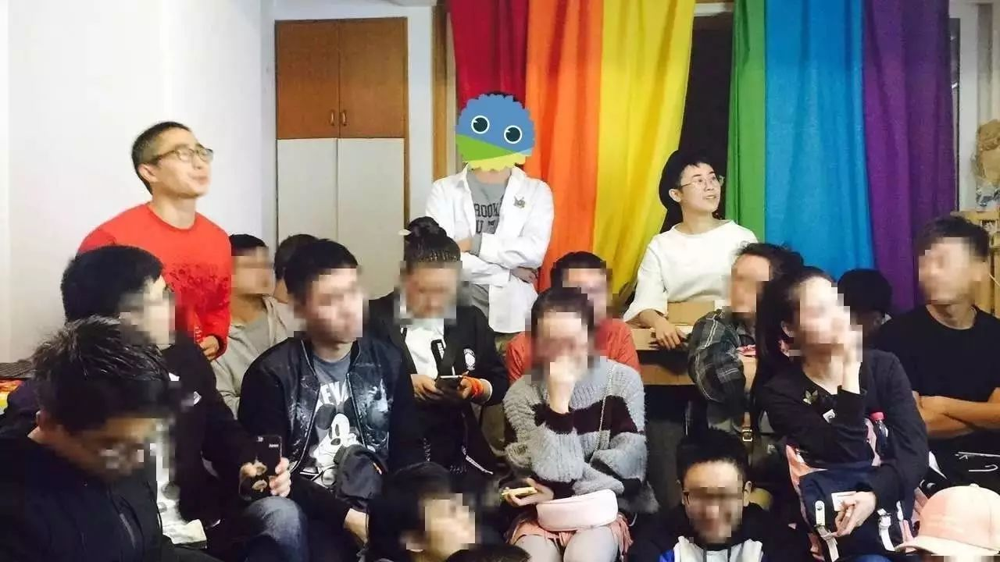
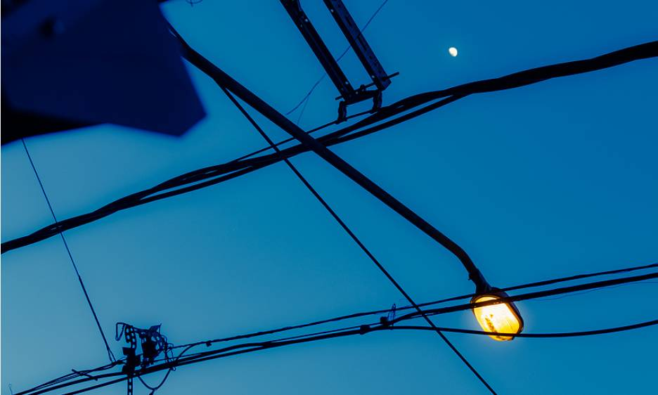
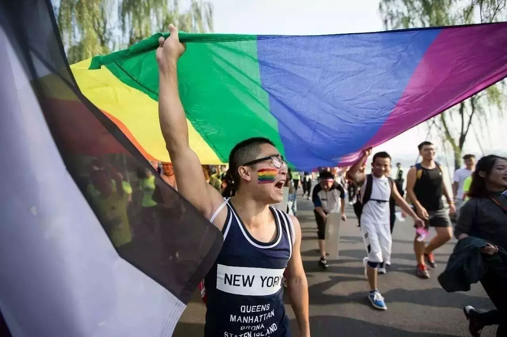
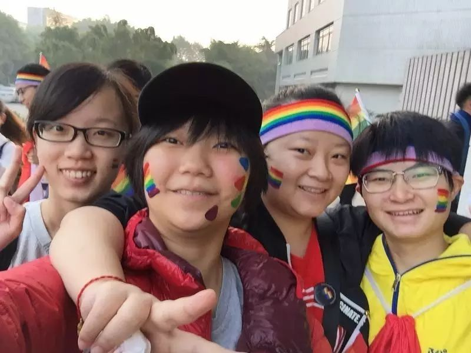

彩虹马拉松 | 十四的第一次
去年马拉松的图片和视频给了我很大的鼓舞，心里的火苗就有点愈燃愈烈之势。我决定，我要参加今年的彩虹马拉松。
面基大会，自我介绍环节每个人都说了“想要把彩虹旗插在什么地方”，答案都很有趣：校园、家门口、丈母娘卧室、天安门、月球、火星、地球上每个角落、每个人的心中……在一个面积不大的房间，密密麻麻地挤满了传递着彩虹旗的ji佬，这是我第一次实实在在感受到一群人一起憧憬多元平等的未来。

· 面基大会现场
马拉松当天，天还未亮，我出发去浙图集合。一个人走在天亮前的漫漫长路上，我在想自己一路走到今天的心理历程就好像这样。家人和自我之间的两难，让我很矛盾，中学的我甚至想到未来出柜就惶惶不安。一直处在深柜状态，就好像整日处于黑暗中一样。但幸运的是，我没有艰难的自我认同过程，从未抗拒否认自己，在挖掘自身的过程中越来越清晰笃定，也一直在为自己想要的未来努力积攒筹码，想着坚持走完这段黑暗之后能迎来黎明。

到达浙图的时候，天已经亮了。领取了彩虹旗、彩虹头带、徽章，在脸上彩绘了一道彩虹。集体热身后大家就出发去起点了。我起初有点担心出柜，但被大家的热情活力感染了，一心地投入集体的狂欢。我们撑着3m*10m的巨型彩虹旗，高喊着“家家都有性少数，社会需要宽容度”“撑同志，反歧视”“爱情不分性别，同性一样和谐”等等口号。每喊一次口号，声浪就像把云层拨开了一点点，阳光更加灿烂明媚地洒向世间。时不时有路人给予支持，他们对我们喊“加油”甚至“同志加油”，每一句支持的话语，每一个鼓励的眼神，都让我很感动，心里暖暖的。但其实，也会有路人不理解，比如有人疑惑地问“同性一样和谐？”，甚至略带嘲讽地说“呵呵同志”，我知道我们要做的事情还有很多，在这里追求平等多元仍然任重而道远。

跑完七公里真的很累，但又觉得非常非常痛快。我觉得这是一种释放自己真实本性的解脱，一种找到志同道合朋友的归属，一种就算全世界与我为敌我也不逃避的坚定。正处在人生十字路口的我，不清楚自己的未来在哪儿，但我想这次马拉松给我的力量，一定会支持我继续努力追求自己的理想生活，坚持做最真实的自己。几年前的我，也曾有过迷茫和徘徊，那时候总觉得这方面的信息闭塞，总觉得自己不一样而难以在日常生活中找到认同，深知这条路并不好走但又无法违背自己的内心。所以，当我如今有能力去为发声时，我很想贡献我自己的一点绵薄之力，努力试图让这个世界变得更好一点点，也让那些此刻正经历自我迷惘的人能够获得鼓励和肯定。

· 从左至右依次为十四、阿园、信仰、李葡萄
、
于我而言，这次的马拉松并不是终点，而算是一个起点。希望未来继续积攒微小的努力，能有朝一日撬动顽固，敲开封闭。